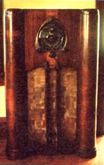
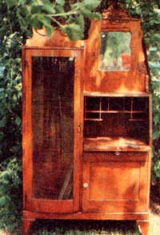
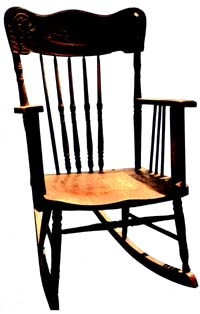
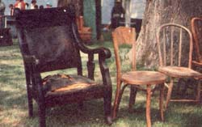

"Why put your money in the bank and draw earnings of only 5% or 6% per year," asks Kevin D. Grothe of Minneapolis, Minnesota, "when you can invest that same money in 'antiques' and earn a return of 200% or 300% or so per week? " Here's Kevin with all the details.
One day the summer before last, I drove out to a farm auction and spent $7.50 for an old oak armchair, $12 for an oak rocker, and $10 for a chest of drawers. The very next day, I rented a space at the local flea market and easily resold the three pieces of furniture for $120.
On a recent Saturday morning with nothing better to do, I went out looking for bargains at local garage sales. At one sale, I offered to pay $1.00 each for three dresser drawers (sans dresser) that had fancy brass pulls. I later removed the six brass handles, stored the drawers away for some future use, and sold the pulls to an antique dealer for $20.
At another auction, a final bid of $55 got me a round oak table that needed some fixing up. After six or eight pleasurable hours of refinishing, I was able to sell the handsome table right off my own front porch for a tidy $150.
I could go on and on ... but I think you get the picture. I buy and sell "previously owned" pieces of furniture for profit ... sometimes big profit. I work strictly in my spare time. And, in case you think my success in the used-furniture biz is unique, it's not: Others have made (and are now making) money this way, too, and so can you ... providing, of course, you don't mind setting your own hours and determining (to a large extent) your own wages!
As you've probably noticed (what with the sudden proliferation of antique shops across the U.S.), antique furniture is quite popular these days. (This goes for most any kind of old, wooden furniture, whether it's truly antique - that is, more than 100 years old - or not.) You don't need to open a retail store, however, to cash in on the present popularity of "antiques". In fact, you don't even need a several hundred-dollar bankroll to get started in the used-furniture biz. With as little as $50 (or less, in some cases) you can head for an auction and come back with enough salable merchandise to repay your initial investment several times over.
Before you decide to plunge headlong into the furniture recycling business, however, I'd like to pass along three pieces of advice based on my experience as a successful buyer and seller of household goods:
[1] Don't expect to get rich quick in this business. Instead, try to make the venture pleasurable and educational . The profits will take care of themselves.
[2] Don't invest money that you can't afford to lose (or have tied up in old furniture for a while). That is to say, don't finance your foray into the furniture biz with money which is earmarked for rent, utilities, car payments, etc. That old dresser you decided to buy may take longer than you thought it would to resell ... and in the meantime, you do have to eat.
[3] Be honest with yourself and everyone you deal with. The profit potential in this business is so great that you should never have to bamboozle a customer out of his or her money. (Of course, this doesn't necessarily mean you have to give away all your "trade secrets" to every client that comes along, either. Let your common sense - and your conscience-be your guide.)
With all this in mind, here's how you can go about making your spare time more enjoyable-and your spare cash more abundant-by buying and reselling old furnishings.
The small-town auction - that energy-charged social event where friends and neighbors meet to discuss the weather, swap stories, and buy goods - is your best all-round source of future inventory.
Auctions are easy to find. Just look in your local paper's classified section under "Antiques", "Farm Equipment", or "Livestock". (The ads will usually say something about "household goods" if furniture or collectables are among the items to be sold.) Also - if you live in or near a small town-check for auction notices on bulletin boards in grocery stores and farm supply outlets.
Should you be lucky enough to have an antique dealer as a friend, you might be able to get him or her to put your name on the mailing list of one or more of the many flyers mailed out by the auctioneers themselves. (You can also approach the auctioneer at any sale you attend and ask if he mails out notices. It won't hurt to inquire.)
When you're choosing auctions to attend, stick with the ones held on a weekday and located 50 miles or more from the nearest large city. These sales are usually only attended by local people and farmers (and maybe a few antique dealers) ... folks who aren't willing to pay the higher prices that are common at big-city auctions (and sales held on weekends).
Also, consider bad weather an asset when you venture out to buy. Auctions and sales invariably go on regardless of weather conditions. When it rains or snows, however, fewer people show up ... resulting in less competition during the bidding and - therefore - lower prices.
Try to arrive at each of the events you attend at least a half hour early, and preferably a full hour. This will give you ample time to inspect the merchandise. I recommend that you carry a pad and pen and write down the names of the items you're likeliest to buy (and what prices you're prepared to pay for them) as you walk around. These notes may keep you from paying more than you should for an item during the excitement of bidding. (It's been known to happen!)
When the appointed time comes, the auctioneer will step forward and loudly announce that he is going to begin. He'll state the terms and methods he will use, and the general order of what he's going to sell first and the items he'll get to last. Then he'll stutter and stammer, wheeze and holler until the item on the block (be it a table, hay wagon, or whatever) is sold to the highest bidder.
The main thing to remember is to stay alert and pay close attention to what's being bidded upon. You'll be amazed, sometimes, at how fast the bidding will be. If you're not quick enough-or vocal enough-your bid may go unnoticed ... or you may find that you've bought a rusty old washtub instead of that nice oak rocker you had your eye on. So stay on your toes!
Also, when you do manage to get that final bid in, be sure to jot down the name of the item-and your final offer-on the back of your bidding card. Do this each time you "buy" a piece, so that you'll be able to keep track of your total spending as the night (or afternoon) wears on.
An "estate sale" occurs when someone decides - for whatever reason (divorce, death, etc.) - to sell everything that isn't bolted down in a home. More often than not, the house's owner will hire a professional to do the pricing (all items at these events are pre-priced right where they sit) and conduct the sale. For this reason, the goods sold at estate sales are often no less expensive than the equivalent items would be in an antique shop.
It's sad but true: Estate sales are becoming more and more a seller's market every day ... mainly because of the throngs of people that flock to these gatherings at the first sight of an ad in the paper. Still, if you have a sharp eye and you're in the right place at the right time, you can make some good buys at these events.
The best estate sales to go to (from the standpoint of low prices) are those that are little advertised and which occur in small towns. Arrive at these sales either very early, when there is still a lot of unsold merchandise, or very late (when many buyers have gone home, causing the prices of the few remaining unsold items - in many cases - to be cut in half).
Garage or yard sales are not really in the same category as estate sales, but the same shopping principles hold true.
When you're looking at furniture (whether it's truly antique or just old), stick with pieces made of one of the hardwoods: oak, ash, walnut, teak, maple, mahogany, etc. (If you aren't able to identify the type of wood from the appearance of its grain, check the item's weight. If the piece is heavy for its size, it's probably made of a hardwood.)
Also, buy only well - constructed furniture. Forget about items held together just by nails. Check to see that the chair, bench, chest, desk, etc., which you're considering is professionally glued or screwed together and has no warped pieces. Generally speaking, any item of furniture that features pressed wood designs, turned or carved legs, or other fancy parts will be in demand and will sell.
Whatever you do, don't buy any piece of furniture that's badly gouged, has missing pieces, or is broken or cracked beyond easy repair. Major furniture reconstruction is best left to experts. ( Refinishing , though, is something you may well want to try. See the accompanying sidebar.)
Avoid buying dishes or glassware altogether, unless you have some special knowledge in this area. The market for glassware is simply too unpredictable ... and the country is flooded right now with reproductions of authentic collectable china, crystal, and porcelain artifacts (reproductions that - to the untrained eye - can't be told from the "real thing"). If you simply must have a particular piece, at least look for a brand name stamped on the bottom. (A few of the many names you can depend on for good value are: Heisy, Steuben, Noritake, Occupied Japan, Roseville, Wedgewood, Nippon, and Red Wing. Beware of chips and cracks. )
As for collectables: Anything with visible nostalgic value that was made more than 20 years ago is probably being collected by someone somewhere. This includes old toys (metallic or wooden), radios, advertising gimmicks, magazines, books, sheet music, postcards, military paraphernalia, kitchen utensils ... you name it. (I know one guy who collects old doorknobs!) If you think an item can be resold, buy it.
Don't be af raid to bid on " mystery boxes", either. Most often such boxes go for only a couple of dollars, and yet the treasures inside are frequently worth many times the selling price. All I can say is, I've yet to regret buying one of these "grab boxes".
If you have any doubt as to how much money a given item is worth, go to a large bookstore or library and look through the many available books on collectables and their values. (You'll probably be surprised at just how many books of this type there are. A few of the better ones are listed at the end of this article.)
Another thing you can do is visit as many antique shops as you can find and browse through their stock, taking note of the prices. These shops are - without a doubt - the best all-around guide to prices in your area. If you're not sure what the going tariff is for, say, maple desks ... all you have to do is visit a store that has a desk similar to yours, and price your piece accordingly.
If - on the other hand - you can't find anything in local antique stores that resembles the oddity you've just bought, ask a dealer what he would pay (wholesale) for the item ... then price your piece 50% higher. (This method isn't always reliable and should be used as a last resort.) Ideally, of course, you should always attempt to learn the market value of things before you buy them.
As a rule of thumb, it's a good idea to ask yourself - whenever you're considering a purchase - "Could I make a profit of 50% on this item?" If the answer is "no" . . . go on to the next piece (unless, of course, you plan to keep the item after you buy it).
You can use most any kind of vehicle - from Volkswagen to dump truck - to haul your purchases home, although - naturally - a pickup or van is best. (If you don't own a vehicle, perhaps you can enlist the services of a friend.)
Whatever form of transportation you use, though, don't make the mistake of buying more goods than you can haul home in one trip. At most auctions and estate sales, sold items must be removed immediately (or at least on the same day).
Loading, by the way, is no problem: Someone will always be available to help you stash that bulky oak dresser in the back of the truck. Do be sure, however, to bring blankets or tarps to use as padding when you're packing more than one precious antique into your vehicle.
There are basically three ways to get the most out of your wares, once you're ready to sell:
[1] Reserve a space at a swap meet,
[2] run an ad in the paper, or
[3] hold your own garage or yard sale.
Flea markets and swap meets are probably among the best ways to "move" your merchandise, simply because of the huge number of people who shop in this manner. Booth space at these open-air markets (which are usually held at drive-in theaters and shopping centers) costs from $1.50 to $5.00 per space assignment per day ... which is more than reasonable, when you consider that as many as 5,000 to 50,000 shoppers may see your goods in a day's time.
If you decide to go this route, try to arrive early (7:00 or 8:00 a.m.) and stake out a good spot. (Sometimes, you'll be required to make advance reservations. Check it out.) Bring along a folding card table (more than one, if necessary) to set your smaller items on. If nothing else, throw a nice blanket on the ground ... it'll make a passable and effective display.
Organize your wares so that your customers will find it easy to browse, and so people won't knock your breakables over or step on your magazines to get a better look at that painting way in the back. And set your prices a good 10 or 20% higher than what you actually expect to get for each piece of merchandise. This way, the shopper has a chance to "dicker" on the price (as is customary at swap meets).
Then again - rather than go to a swap meet - you may want to run a classified ad under the appropriate heading of your local newspaper. Advertise your most interesting items only, and keep the ad itself short. (This will prompt interested parties to call for more information.) Include the price in your advertisement only if you consider it to be an especially low one.
If you prefer to hold your own garage, porch, yard, or living room sale, that's easy too. Run a short ad in the paper or just put up signs on strategic street corners. If you live on a particularly busy thorough - fare, you won't have to advertise at all ... just set your inventory in plain view, and customers will begin to gravitate to your house. Before you go this route, however, be sure to check local ordinances. (Some municipalities have restrictions on the number of sales you may hold per year others issue special licenses.)
By now you're probably wondering how much money a person can expect to make buying and selling pre-owned household goods. It's hard to give a definite, dollars-and- cents answer, since the profit on your investment can range from zero to several hundred percent, and since you can approach this business either full time or (as I do) part time. Roughly speaking, though - if you hustle and if you have a good eye for items that will sell - you can count on grossing between $200 and $400 a week on an investment of $50 to $100 ... working only 15 to 20 hours! (That's on the average . As I mentioned at the beginning of this article, I've made as much as $90 a day - and more - in this lucrative field.)
If the idea of selling a piece of furniture for four times what you paid for it makes you feel a little like a "capitalist pig" . . . perhaps you're not cut out for this kind of highprofit enterprise. Just remember, though, that antique dealers charge whatever they feel they can get for their wares, even if they picked up the merchandise for free. (And don't forget that their customers are usually happy to pay every penny of the purchase price, or else they wouldn't buy the items[s] in the first place.)
Not that it isn't a good idea to practice a little kindness now and then by passing a savings on to your customer. If I get an exceptional deal on an item, I pass the savings right on to the next lucky person ... and so should you. When and if you cross paths with this individual again, you'll certainly be remembered ... either as a fool or a friend. (It doesn't matter which. The customer will still be more likely to buy from you the second time around.)
The used furniture business isn't for everybody. It's just for people who don't mind going to swap meets and auctions, surrounding themselves with fine old pieces of furniture, and earning $200 a week (or more) in their spare time. I know that includes me ... maybe it does you, too!
1. Antiquing From A to Z by Michael DeForrest (Simon & Schuster, 1975). Hard cover. $8.95
2. Collector's Price Guide to Bottles, Tobacco Tins, and Relics by Marvin Davis and Helen Davis (A & W Visual Library, 1975). Hard cover. $5.95
3. The Kovels' Complete Antiques Price List, 9th Edition, by Ralph Kovel and Terry Kovel (Crown Publications, 1976). Soft cover. $6.95
4. The Kovels' Official Bottle Price List , 3rd Edition, by Ralph Kovel and Terry Kovel (Crown Publications, 1975). Hard cover. $6.95
5. Primer of American Antiques by Carl W. Drepperd (Doubleday, 1944). Hard cover, $5.95
Oftentimes in your search for good used furniture you'll encounter a strikingly beautiful chest, rocking chair, or other item that could be even more strikingly beautiful if the object weren't painted algae green or mud brown. When this happens, don't pass the piece up ... instead, buy it and refinish it. Afterwards, you'll have an item that's much more valuable - and much more marketable - than it would otherwise have been.
It's not difficult to refinish furniture. Here's what you'll need in the way of supplies:
[1] A couple of paint brushes.
[2] Light-bodied furniture stripper.
[3] No. 2 steel wool and cotton rags.
[4] Small tools (toothpicks, nail files, etc.) for working the paint out of deep crevices in the wood.
[5] Furniture stain (optional).
[6] Varnish, wax, boiled linseed oil, or tung oil (as desired).
[7] A well-ventilated working area.
Follow the manufacturer's direc tions when you work with the stripper. Try to avoid breathing the fumes, and whatever you do, don't smoke or light a match ... most light-bodied finish removers are exceedingly flammable.
After you've removed the old finish from the chest, chair, or whatever, it's time to put on a new preservative. I prefer boiled linseed oil, since it [1] can be applied easily with a soft cloth, [2] keeps wood from drying out, and [3] brings out the true beauty of the grain. (Also, linseed oil has a non-toxic and-in my opinion - pleasing odor.) The oil's only drawback is that it takes a long time to dry ... two or three days, depending on temperature and humidity. Apply two to three coats for a nice, uniform finish, and allow the object to dry completely between coats.
After you've stripped and ref inished a couple of pieces of furniture, you'll have gotten the hang of the operation ... and you'll be well on your way to earning higher profits in the used furniture biz. -KG .
|
 |
 |
 |
|
 |
|
|